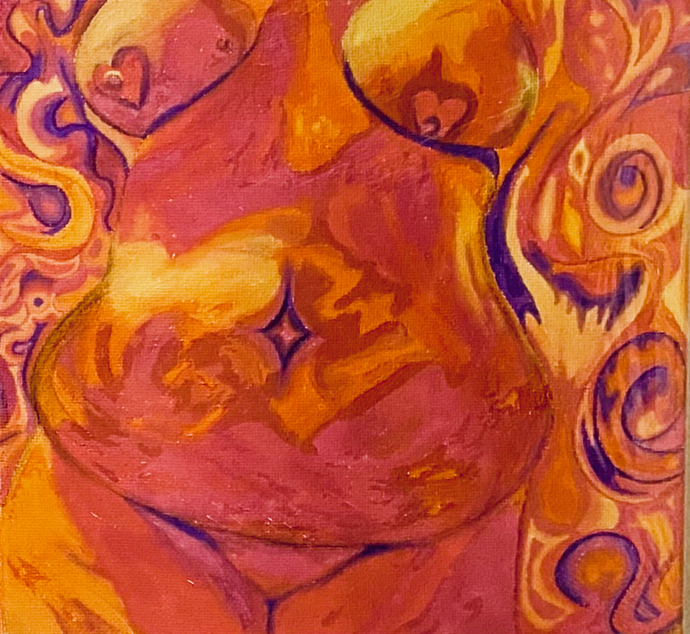
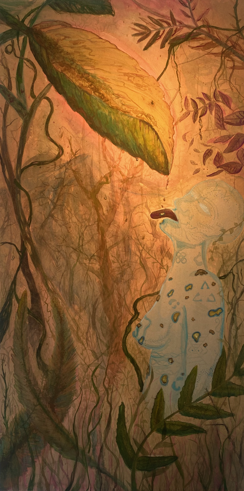
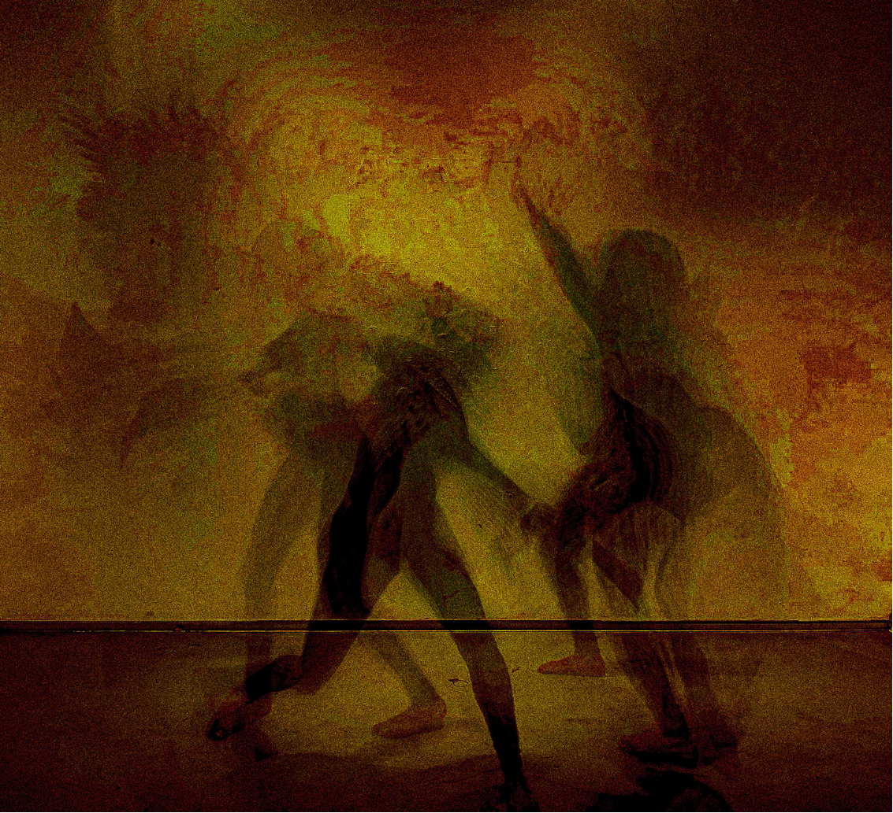
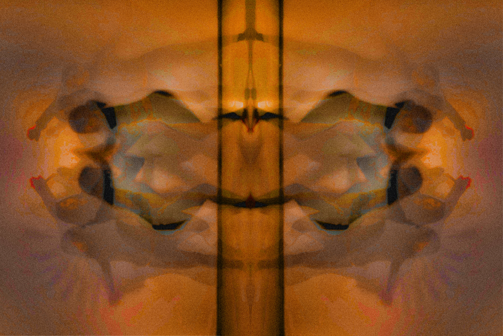
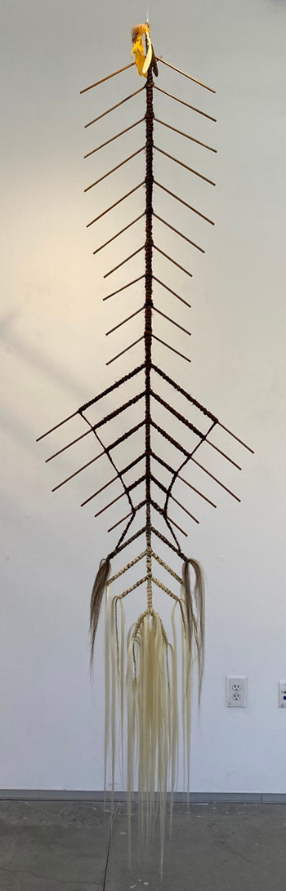
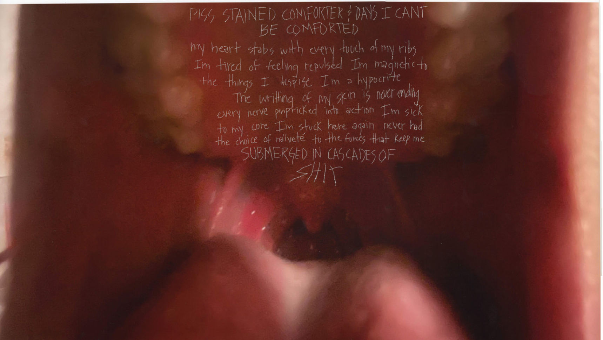
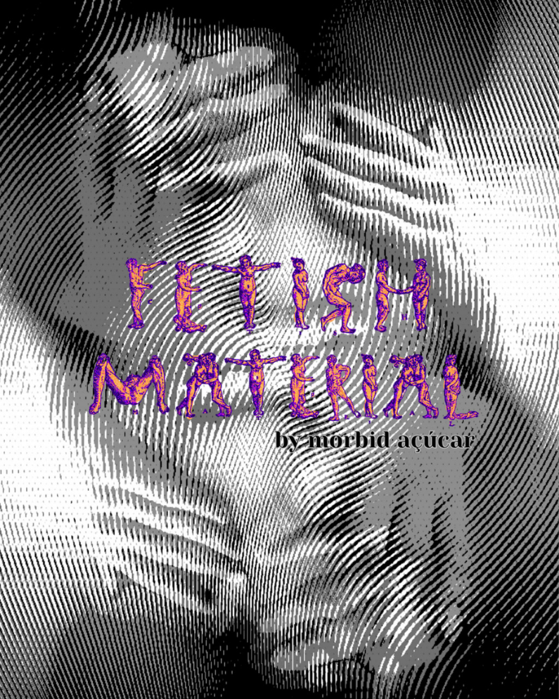

Imaginary Bodies(1/?)

This series represents the reclamation of bodily autonomy in presentation. Models ranged in body types and were chosen due to not fitting into Eurocentric beauty standards. Their scars, stretch marks, fatness, skinnyness, and imperfections were an integral part in showcasing their individuality. This is representative of the rejection of bodies as monolithic and introduced a way to view the naked body as playful rather than with imposed sexuality.
Sede

The space explored in this piece is both physical and representational of my thoughts on how humanity is at the crux of environmental catastrophe. We are existing at the precipice of capitalism’s extortive limits to Mother Earth. How far can we push those who are at the forefront of experiencing climate disasters before we are all subject to an inevitable end? Indigenous people throughout the world have been pushing against corporations that have been destroying the lands they are on for natural resources, this fight has directly impacted the health and livelihood of my family in Brasil. The reciprocal existence that is destined for all living beings has come to an end with the exploitative methodologies of capitalism. In this piece, I am highlighting this impertinent matter to showcase my reality as someone who is both from the jungle and from the city. The figure has no distinctive features and is meant to depict the dehumanization of those who live in reciprocity with the land. Mercury, calcium, lead, and arsenic are depicted through the colorization of the rain. The plants are in a state of decay & the human subject has blisters on their body to represent the harshness of these minerals on the body.
ABSORBED SOLIP[CIS]M

This series of photos encapsulates the experience of codependency and loss. This image represents the visceral break from each other after being deeply embedded into each others' lives.
ABSORBED SOLIP[CIS]M

This series of photos encapsulates the experience of codependency and loss. This image represents tension in seeing so much of yourself in the other.
ThalassophobiQ

Braids intertwining to represent intergenerational knowledge and healing through ritual.
Dripping In Lace Series (2/5)

Series on fetishization and disssociation through imposition of sexuality onto one's body and the chaos of permeating through someone's boundaries coercively.
Fetish Material

65 pages of poetry, photography, and collages of my body being mangled and trasnformed into new beings. (Limited print series)